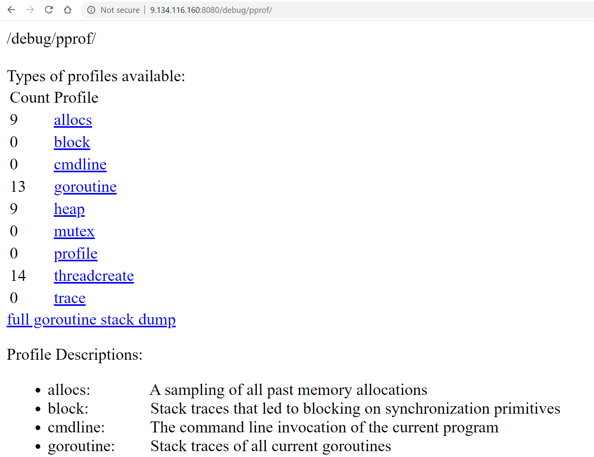
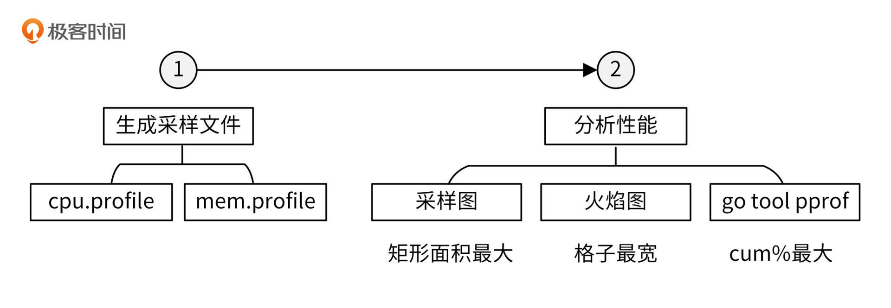
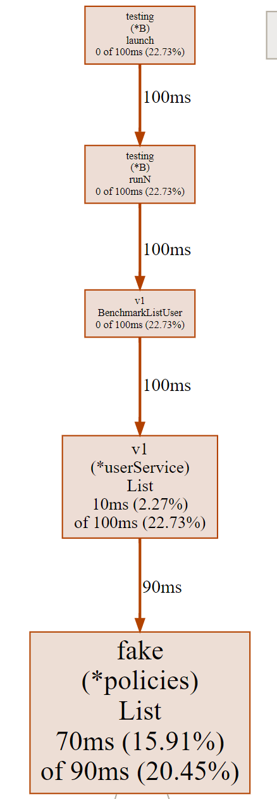
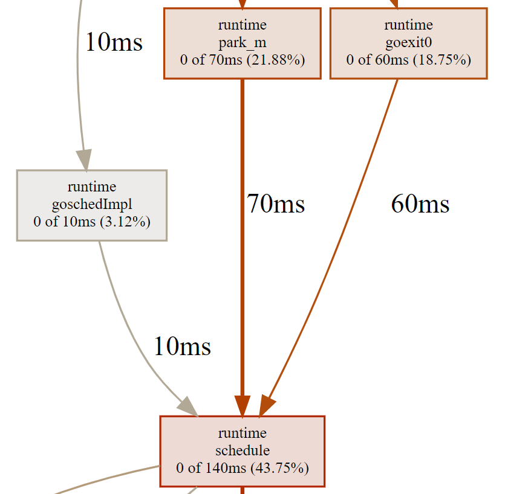
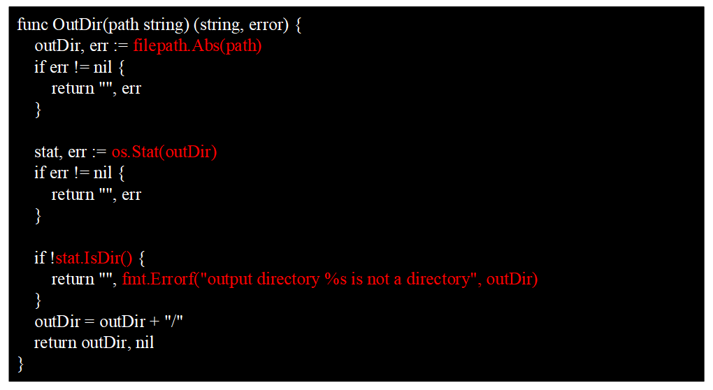
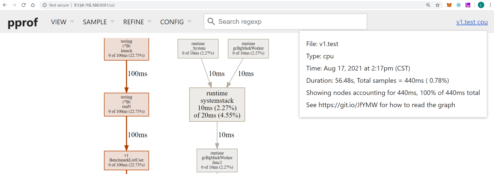
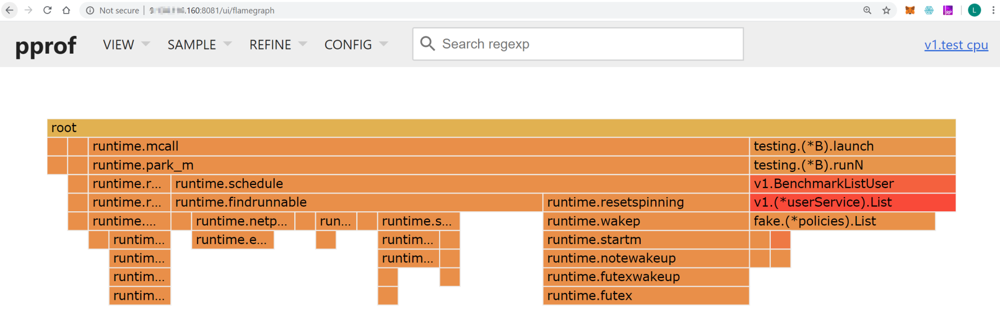
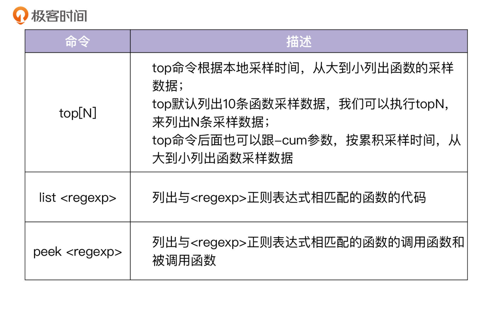
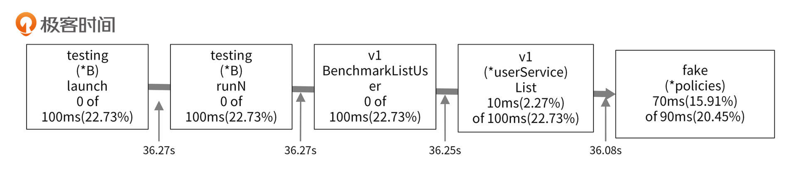

- 00 开篇词 从 0 开始搭建一个企业级 Go 应用.md.html
- 01 IAM系统概述：我们要实现什么样的 Go 项目？.md.html
- 02 环境准备：如何安装和配置一个基本的 Go 开发环境？.md.html
- 03 项目部署：如何快速部署 IAM 系统？.md.html
- 04 规范设计（上）：项目开发杂乱无章，如何规范？.md.html
- 05 规范设计（下）：commit 信息风格迥异、难以阅读，如何规范？.md.html
- 06 目录结构设计：如何组织一个可维护、可扩展的代码目录？.md.html
- 07 工作流设计：如何设计合理的多人开发模式？.md.html
- 08 研发流程设计（上）：如何设计 Go 项目的开发流程？.md.html
- 09 研发流程设计（下）：如何管理应用的生命周期？.md.html
- 10 设计方法：怎么写出优雅的 Go 项目？.md.html
- 11 设计模式：Go常用设计模式概述.md.html
- 12 API 风格（上）：如何设计RESTful API？.md.html
- 13 API 风格（下）：RPC API介绍.md.html
- 14 项目管理：如何编写高质量的Makefile？.md.html
- 15 研发流程实战：IAM项目是如何进行研发流程管理的？.md.html
- 16 代码检查：如何进行静态代码检查？.md.html
- 17 API 文档：如何生成 Swagger API 文档 ？.md.html
- 18 错误处理（上）：如何设计一套科学的错误码？.md.html
- 19 错误处理（下）：如何设计错误包？.md.html
- 20 日志处理（上）：如何设计日志包并记录日志？.md.html
- 21 日志处理（下）：手把手教你从 0 编写一个日志包.md.html
- 22 应用构建三剑客：Pflag、Viper、Cobra 核心功能介绍.md.html
- 23 应用构建实战：如何构建一个优秀的企业应用框架？.md.html
- 24 Web 服务：Web 服务核心功能有哪些，如何实现？.md.html
- 25 认证机制：应用程序如何进行访问认证？.md.html
- 26 IAM项目是如何设计和实现访问认证功能的？.md.html
- 27 权限模型：5大权限模型是如何进行资源授权的？.md.html
- 28 控制流（上）：通过iam-apiserver设计，看Web服务的构建.md.html
- 29 控制流（下）：iam-apiserver服务核心功能实现讲解.md.html
- 30 ORM：CURD 神器 GORM 包介绍及实战.md.html
- 31 数据流：通过iam-authz-server设计，看数据流服务的设计.md.html
- 32 数据处理：如何高效处理应用程序产生的数据？.md.html
- 33 SDK 设计（上）：如何设计出一个优秀的 Go SDK？.md.html
- 34 SDK 设计（下）：IAM项目Go SDK设计和实现.md.html
- 35 效率神器：如何设计和实现一个命令行客户端工具？.md.html
- 36 代码测试（上）：如何编写 Go 语言单元测试和性能测试用例？.md.html
- 37 代码测试（下）：Go 语言其他测试类型及 IAM 测试介绍.md.html
- 38 性能分析（上）：如何分析 Go 语言代码的性能？.md.html
- 39 性能分析（下）：API Server性能测试和调优实战.md.html
- 40 软件部署实战（上）：部署方案及负载均衡、高可用组件介绍.md.html
- 41 软件部署实战（中）：IAM 系统生产环境部署实战.md.html
- 42 软件部署实战（下）：IAM系统安全加固、水平扩缩容实战.md.html
- 43 技术演进（上）：虚拟化技术演进之路.md.html
- 44 技术演进（下）：软件架构和应用生命周期技术演进之路.md.html
- 45 基于Kubernetes的云原生架构设计.md.html
- 46 如何制作Docker镜像？.md.html
- 47 如何编写Kubernetes资源定义文件？.md.html
- 48 IAM 容器化部署实战.md.html
- 49 服务编排（上）：Helm服务编排基础知识.md.html
- 50 服务编排（下）：基于Helm的服务编排部署实战.md.html
- 51 基于 GitHub Actions 的 CI 实战.md.html
- 特别放送 Go Modules依赖包管理全讲.md.html
- 特别放送 Go Modules实战.md.html
- 特别放送 IAM排障指南.md.html
- 特别放送 分布式作业系统设计和实现.md.html
- 特别放送 给你一份Go项目中最常用的Makefile核心语法.md.html
- 特别放送 给你一份清晰、可直接套用的Go编码规范.md.html
- 直播加餐 如何从小白进阶成 Go 语言专家？.md.html
- 结束语 如何让自己的 Go 研发之路走得更远？.md.html
- 捐赠
38 性能分析（上）：如何分析 Go 语言代码的性能？
你好，我是孔令飞。
作为开发人员，我们一般都局限在功能上的单元测试中，对一些性能上的细节往往不会太关注。但是，如果我们在上线的时候对项目的整体性能没有一个全面的了解，随着请求量越来越大，可能会出现各种各样的问题，比如CPU占用高、内存使用率高、请求延时高等。为了避免这些性能瓶颈，我们在开发的过程中需要通过一定的手段，来对程序进行性能分析。
Go语言已经为开发者内置了很多性能调优、监控的工具和方法，这大大提升了我们profile分析的效率，借助这些工具，我们可以很方便地对Go程序进行性能分析。在Go语言开发中，开发者基本都是通过内置的pprof工具包来进行性能分析的。
在进行性能分析时，我们会先借助一些工具和包，生成性能数据文件，然后再通过pprof工具分析性能数据文件，从而分析代码的性能。那么接下来，我们就分别来看下如何执行这两步操作。
生成性能数据文件
要查看性能数据，需要先生成性能数据文件。生成性能数据文件有三种方法，分别是通过命令行、通过代码和通过net/http/pprof包。这些工具和包会分别生成CPU和内存性能数据。
接下来，我们就来看下这三种方法分别是如何生成性能数据文件的。
通过命令行生成性能数据文件
我们可以使用go test -cpuprofile来生成性能测试数据。进入internal/apiserver/service/v1目录，执行以下命令：
$ go test -bench=".*" -cpuprofile cpu.profile -memprofile mem.profile
goos: linux
goarch: amd64
pkg: github.com/marmotedu/iam/internal/apiserver/service/v1
cpu: AMD EPYC Processor
BenchmarkListUser-8 280 4283077 ns/op
PASS
ok github.com/marmotedu/iam/internal/apiserver/service/v1 1.798s
上面的命令会在当前目录下生成3个文件：
- v1.test，测试生成的二进制文件，进行性能分析时可以用来解析各种符号。
- cpu.profile，CPU性能数据文件。
- mem.profile，内存性能数据文件。
通过代码生成性能数据文件
我们还可以使用代码来生成性能数据文件，例如pprof.go文件：
package main
import (
"os"
"runtime/pprof"
)
func main() {
cpuOut, _ := os.Create("cpu.out")
defer cpuOut.Close()
pprof.StartCPUProfile(cpuOut)
defer pprof.StopCPUProfile()
memOut, _ := os.Create("mem.out")
defer memOut.Close()
defer pprof.WriteHeapProfile(memOut)
Sum(3, 5)
}
func Sum(a, b int) int {
return a + b
}
运行pprof.go文件：
$ go run pprof.go
运行pprof.go文件后，会在当前目录生成cpu.profile和mem.profile性能数据文件。
通过net/http/pprof生成性能数据文件
如果要分析HTTP Server的性能，我们可以使用net/http/pprof包来生成性能数据文件。
IAM项目使用Gin框架作为HTTP引擎，所以IAM项目使用了github.com/gin-contrib/pprof包来启用HTTP性能分析。github.com/gin-contrib/pprof包是net/http/pprof的一个简单封装，通过封装使pprof的功能变成了一个Gin中间件，这样可以根据需要加载pprof中间件。
github.com/gin-contrib/pprof包中的pprof.go文件中有以下代码：
func Register(r *gin.Engine, prefixOptions ...string) {
prefix := getPrefix(prefixOptions...)
prefixRouter := r.Group(prefix)
{
...
prefixRouter.GET("/profile", pprofHandler(pprof.Profile))
...
}
}
func pprofHandler(h http.HandlerFunc) gin.HandlerFunc {
handler := http.HandlerFunc(h)
return func(c *gin.Context) {
handler.ServeHTTP(c.Writer, c.Request)
}
}
通过上面的代码，你可以看到github.com/gin-contrib/pprof包将net/http/pprof.Profile转换成了gin.HandlerFunc，也就是Gin中间件。
要开启HTTP性能分析，只需要在代码中注册pprof提供的HTTP Handler即可（位于internal/pkg/server/genericapiserver.go文件中）：
// install pprof handler
if s.enableProfiling {
pprof.Register(s.Engine)
}
上面的代码根据配置--feature.profiling来判断是否开启HTTP性能分析功能。我们开启完HTTP性能分析，启动HTTP服务iam-apiserver后，即可访问http:// x.x.x.x:8080/debug/pprof（x.x.x.x是Linux服务器的地址）来查看profiles信息。profiles信息如下图所示：

我们可以通过以下命令，来获取CPU性能数据文件：
$ curl http://127.0.0.1:8080/debug/pprof/profile -o cpu.profile
执行完上面的命令后，需要等待30s，pprof会采集这30s内的性能数据，我们需要在这段时间内向服务器连续发送多次请求，请求的频度可以根据我们的场景来决定。30s之后，/debug/pprof/profile接口会生成CPU profile文件，被curl命令保存在当前目录下的cpu.profile文件中。
同样的，我们可以执行以下命令来生成内存性能数据文件：
$ curl http://127.0.0.1:8080/debug/pprof/heap -o mem.profile
上面的命令会自动下载heap文件，并被curl命令保存在当前目录下的mem.profile文件中。
我们可以使用go tool pprof [mem|cpu].profile命令来分析HTTP接口的CPU和内存性能。我们也可以使用命令go tool pprof http://127.0.0.1:8080/debug/pprof/profile，或者go tool pprof http://127.0.0.1:8080/debug/pprof/heap，来直接进入pprof工具的交互Shell中。go tool pprof会首先下载并保存CPU和内存性能数据文件，然后再分析这些文件。
通过上面的三种方法，我们生成了cpu.profile和mem.profile，接下来我们就可以使用go tool pprof来分析这两个性能数据文件，进而分析我们程序的CPU和内存性能了。下面，我来具体讲讲性能分析的过程。
性能分析
使用go tool pprof，来对性能进行分析的流程，你可以参考下图：

接下来，我先给你介绍下pprof工具，再介绍下如何生成性能数据，最后再分别介绍下CPU和内存性能分析方法。
pprof工具介绍
pprof是一个Go程序性能分析工具，用它可以访问并分析性能数据文件，它还会根据我们的要求，提供高可读性的输出信息。Go在语言层面上集成了profile采样工具，只需在代码中简单地引入runtime/pprof或者net/http/pprof包，即可获取程序的profile文件，并通过profile文件来进行性能分析。
net/http/pprof基于runtime/pprof包进行封装，并在 HTTP 端口上暴露出来。
生成性能数据
我们在做性能分析时，主要是对内存和CPU性能进行分析。为了分析内存和CPU的性能，我们需要先生成性能数据文件。在 IAM 源码中，也有包含性能测试的用例，下面我会借助 IAM 源码中的性能测试用例，来介绍如何分析程序的性能。
进入internal/apiserver/service/v1目录，user_test.go文件包含了性能测试函数 BenchmarkListUser，执行以下命令来生成性能数据文件：
$ go test -benchtime=30s -benchmem -bench=".*" -cpuprofile cpu.profile -memprofile mem.profile
goos: linux
goarch: amd64
pkg: github.com/marmotedu/iam/internal/apiserver/service/v1
cpu: AMD EPYC Processor
BenchmarkListUser-8 175 204523677 ns/op 15331 B/op 268 allocs/op
PASS
ok github.com/marmotedu/iam/internal/apiserver/service/v1 56.514s
上面的命令会在当前目录下产生cpu.profile、mem.profile性能数据文件，以及v1.test二进制文件。接下来，我们基于cpu.profile、mem.profile、v1.test文件来分析代码的CPU和内存性能。为了获取足够的采样数据，我们将benchmark时间设置为30s。
在做性能分析时，我们可以采取不同的手段来分析性能，比如分析采样图、分析火焰图，还可以使用go tool pprof交互模式，查看函数CPU和内存消耗数据。下面我会运用这些方法，来分析CPU性能和内存性能。
CPU性能分析
在默认情况下，Go语言的运行时系统会以100 Hz的的频率对CPU使用情况进行采样，也就是说每秒采样100次，每10毫秒采样一次。每次采样时，会记录正在运行的函数，并统计其运行时间，从而生成CPU性能数据。
上面我们已经生成了CPU性能数据文件cpu.profile，接下来会运用上面提到的三种方法来分析该性能文件，优化性能。
方法一：分析采样图
要分析性能，最直观的方式当然是看图，所以首先我们需要生成采样图，生成过程可以分为两个步骤。
第一步，确保系统安装了graphviz：
$ sudo yum -y install graphviz.x86_64
第二步，执行go tool pprof生成调用图：
$ go tool pprof -svg cpu.profile > cpu.svg # svg 格式
$ go tool pprof -pdf cpu.profile > cpu.pdf # pdf 格式
$ go tool pprof -png cpu.profile > cpu.png # png 格式
以上命令会生成cpu.pdf、cpu.svg和cpu.png文件，文件中绘制了函数调用关系以及其他采样数据。如下图所示：

这张图片由有向线段和矩形组成。我们先来看有向线段的含义。
有向线段描述了函数的调用关系，矩形包含了CPU采样数据。从图中，我们看到没箭头的一端调用了有箭头的一端，可以知道v1.(*userService).List函数调用了fake.(*policies).List。
线段旁边的数字90ms则说明，v1.(*userService).List调用fake.(*policies).List函数，在采样周期内，一共耗用了90ms。通过函数调用关系，我们可以知道某个函数调用了哪些函数，并且调用这些函数耗时多久。
这里，我们再次解读下图中调用关系中的重要信息：

runtime.schedule的累积采样时间（140ms）中，有10ms来自于runtime.goschedImpl函数的直接调用，有70ms来自于runtime.park_m函数的直接调用。这些数据可以说明runtime.schedule函数分别被哪些函数调用，并且调用频率有多大。也因为这个原因，函数runtime.goschedImpl对函数runtime.schedule的调用时间必定小于等于函数runtime.schedule的累积采样时间。
我们再来看下矩形里的采样数据。这些矩形基本都包含了3类信息：
- 函数名/方法名，该类信息包含了包名、结构体名、函数名/方法名，方便我们快速定位到函数/方法，例如
fake(*policies)List说明是fake包，policies结构体的List方法。 - 本地采样时间，以及它在采样总数中所占的比例。本地采样时间是指采样点落在该函数中的总时间。
- 累积采样时间，以及它在采样总数中所占的比例。累积采样时间是指采样点落在该函数，以及被它直接或者间接调用的函数中的总时间。
我们可以通过OutDir函数来解释本地采样时间和累积采样时间这两个概念。OutDir函数如下图所示：

整个函数的执行耗时，我们可以认为是累积采样时间，包含了白色部分的代码耗时和红色部分的函数调用耗时。白色部分的代码耗时，可以认为是本地采样时间。
通过累积采样时间，我们可以知道函数的总调用时间，累积采样时间越大，说明调用它所花费的CPU时间越多。但你要注意，这并不一定说明这个函数本身是有问题的，也有可能是函数所调用的函数性能有瓶颈，这时候我们应该根据函数调用关系顺藤摸瓜，去寻找这个函数直接或间接调用的函数中最耗费CPU时间的那些。
如果函数的本地采样时间很大，就说明这个函数自身耗时（除去调用其他函数的耗时）很大，这时候需要我们分析这个函数自身的代码，而不是这个函数直接或者间接调用函数的代码。
采样图中，矩形框面积越大，说明这个函数的累积采样时间越大。那么，如果一个函数分析采样图中的矩形框面积很大，这时候我们就要认真分析了，因为很可能这个函数就有需要优化性能的地方。
方法二：分析火焰图
上面介绍的采样图，其实在分析性能的时候还不太直观，这里我们可以通过生成火焰图，来更直观地查看性能瓶颈。火焰图是由Brendan Gregg大师发明的专门用来把采样到的堆栈轨迹（Stack Trace）转化为直观图片显示的工具，因整张图看起来像一团跳动的火焰而得名。
go tool pprof提供了-http参数，可以使我们通过浏览器浏览采样图和火焰图。执行以下命令：
$ go tool pprof -http="0.0.0.0:8081" v1.test cpu.profile
然后访问http://x.x.x.x:8081/（x.x.x.x是执行go tool pprof命令所在服务器的IP地址），则会在浏览器显示各类采样视图数据，如下图所示：

上面的UI页面提供了不同的采样数据视图：
- Top，类似于 linux top 的形式，从高到低排序。
- Graph，默认弹出来的就是该模式，也就是上一个图的那种带有调用关系的图。
- Flame Graph：pprof 火焰图。
- Peek：类似于 Top 也是从高到底的排序。
- Source：和交互命令式的那种一样，带有源码标注。
- Disassemble：显示所有的总量。
接下来，我们主要来分析火焰图。在UI界面选择Flame Graph（VIEW -> Flame Graph），就会展示火焰图，如下图所示：

火焰图主要有下面这几个特征：
- 每一列代表一个调用栈，每一个格子代表一个函数。
- 纵轴展示了栈的深度，按照调用关系从上到下排列。最下面的格子代表采样时，正在占用CPU的函数。
- 调用栈在横向会按照字母排序，并且同样的调用栈会做合并，所以一个格子的宽度越大，说明这个函数越可能是瓶颈。
- 火焰图格子的颜色是随机的暖色调，方便区分各个调用信息。
查看火焰图时，格子越宽的函数，就越可能存在性能问题，这时候，我们就可以分析该函数的代码，找出问题所在。
方法三：用go tool pprof交互模式查看详细数据
我们可以执行go tool pprof命令，来查看CPU的性能数据文件：
$ go tool pprof v1.test cpu.profile
File: v1.test
Type: cpu
Time: Aug 17, 2021 at 2:17pm (CST)
Duration: 56.48s, Total samples = 440ms ( 0.78%)
Entering interactive mode (type "help" for commands, "o" for options)
(pprof)
go tool pprof输出了很多信息：
- File，二进制可执行文件名称。
- Type，采样文件的类型，例如cpu、mem等。
- Time，生成采样文件的时间。
- Duration，程序执行时间。上面的例子中，程序总执行时间为
37.43s，采样时间为42.37s。采样程序在采样时，会自动分配采样任务给多个核心，所以总采样时间可能会大于总执行时间。 - (pprof)，命令行提示，表示当前在
go tool的pprof工具命令行中，go tool还包括cgo、doc、pprof、trace等多种命令。
执行go tool pprof命令后，会进入一个交互shell。在这个交互shell中，我们可以执行多个命令，最常用的命令有三个，如下表所示：

我们在交互界面中执行top命令，可以查看性能样本数据：
(pprof) top
Showing nodes accounting for 350ms, 79.55% of 440ms total
Showing top 10 nodes out of 47
flat flat% sum% cum cum%
110ms 25.00% 25.00% 110ms 25.00% runtime.futex
70ms 15.91% 40.91% 90ms 20.45% github.com/marmotedu/iam/internal/apiserver/store/fake.(*policies).List
40ms 9.09% 50.00% 40ms 9.09% runtime.epollwait
40ms 9.09% 59.09% 180ms 40.91% runtime.findrunnable
30ms 6.82% 65.91% 30ms 6.82% runtime.write1
20ms 4.55% 70.45% 30ms 6.82% runtime.notesleep
10ms 2.27% 72.73% 100ms 22.73% github.com/marmotedu/iam/internal/apiserver/service/v1.(*userService).List
10ms 2.27% 75.00% 10ms 2.27% runtime.checkTimers
10ms 2.27% 77.27% 10ms 2.27% runtime.doaddtimer
10ms 2.27% 79.55% 10ms 2.27% runtime.mallocgc
上面的输出中，每一行表示一个函数的信息。pprof程序中最重要的命令就是topN，这个命令用来显示profile文件中最靠前的N个样本（sample），top命令会输出多行信息，每一行代表一个函数的采样数据，默认按flat%排序。输出中，各列含义如下：
- flat：采样点落在该函数中的总时间。
- flat%：采样点落在该函数中时间的百分比。
- sum%：前面所有行的flat%的累加值，也就是上一项的累积百分比。
- cum：采样点落在该函数中的，以及被它调用的函数中的总时间。
- cum%：采样点落在该函数中的，以及被它调用的函数中的总次数百分比。
- 函数名。
上面这些信息，可以告诉我们函数执行的时间和耗时排名，我们可以根据这些信息，来判断哪些函数可能有性能问题，或者哪些函数的性能可以进一步优化。
这里想提示下，如果执行的是go tool pprof mem.profile，那么上面的各字段意义是类似的，只不过这次不是时间而是内存分配大小（字节）。
执行top命令默认是按flat%排序的，在做性能分析时，我们需要先按照cum来排序，通过cum，我们可以直观地看到哪个函数总耗时最多，然后再参考该函数的本地采样时间和调用关系，来判断是该函数性能耗时多，还是它调用的函数耗时多。
执行top -cum输出如下：
(pprof) top20 -cum
Showing nodes accounting for 280ms, 63.64% of 440ms total
Showing top 20 nodes out of 47
flat flat% sum% cum cum%
0 0% 0% 320ms 72.73% runtime.mcall
0 0% 0% 320ms 72.73% runtime.park_m
0 0% 0% 280ms 63.64% runtime.schedule
40ms 9.09% 9.09% 180ms 40.91% runtime.findrunnable
110ms 25.00% 34.09% 110ms 25.00% runtime.futex
10ms 2.27% 36.36% 100ms 22.73% github.com/marmotedu/iam/internal/apiserver/service/v1.(*userService).List
0 0% 36.36% 100ms 22.73% github.com/marmotedu/iam/internal/apiserver/service/v1.BenchmarkListUser
0 0% 36.36% 100ms 22.73% runtime.futexwakeup
0 0% 36.36% 100ms 22.73% runtime.notewakeup
0 0% 36.36% 100ms 22.73% runtime.resetspinning
0 0% 36.36% 100ms 22.73% runtime.startm
0 0% 36.36% 100ms 22.73% runtime.wakep
0 0% 36.36% 100ms 22.73% testing.(*B).launch
0 0% 36.36% 100ms 22.73% testing.(*B).runN
70ms 15.91% 52.27% 90ms 20.45% github.com/marmotedu/iam/internal/apiserver/store/fake.(*policies).List
10ms 2.27% 54.55% 50ms 11.36% runtime.netpoll
40ms 9.09% 63.64% 40ms 9.09% runtime.epollwait
0 0% 63.64% 40ms 9.09% runtime.modtimer
0 0% 63.64% 40ms 9.09% runtime.resetForSleep
0 0% 63.64% 40ms 9.09% runtime.resettimer (inline)
从上面的输出可知，v1.BenchmarkListUser、testing.(*B).launch、testing.(*B).runN的本地采样时间占比分别为0%、0%、0%，但是三者的累积采样时间占比却比较高，分别为22.73%、22.73%、22.73%。
本地采样时间占比很小，但是累积采样时间占比很高，说明这3个函数耗时多是因为调用了其他函数，它们自身几乎没有耗时。根据采样图，我们可以看到函数的调用关系，具体如下图所示：

从采样图中，可以知道最终v1.BenchmarkListUser调用了v1.(*userService).List函数。v1.(*userService).List函数是我们编写的函数，该函数的本地采样时间占比为2.27%，但是累积采样时间占比却高达22.73%，说明v1.(*userService).List调用其他函数耗用了大量的CPU时间。
再观察采样图，可以看出v1.(*userService).List耗时久是因为调用了fake.(*policies).List函数。我们也可以通过list命令查看函数内部的耗时情况：

list userService.*List会列出userService结构体List方法内部代码的耗时情况，从上图也可以看到，u.store.Policies().List耗时最多。fake.(*policies).List的本地采样时间占比为15.91%，说明fake.(*policies).List函数本身可能存在瓶颈。走读fake.(*policies).List代码可知，该函数是查询数据库的函数，查询数据库会有延时。继续查看v1.(*userService).List代码，我们可以发现以下调用逻辑：
func (u *userService) ListWithBadPerformance(ctx context.Context, opts metav1.ListOptions) (*v1.UserList, error) {
...
for _, user := range users.Items {
policies, err := u.store.Policies().List(ctx, user.Name, metav1.ListOptions{})
...
})
}
...
}
我们在for循环中，串行调用了fake.(*policies).List函数，每一次循环都会调用有延时的fake.(*policies).List函数。多次调用，v1.(*userService).List函数的耗时自然会累加起来。
现在问题找到了，那我们怎么优化呢？你可以利用CPU多核特性，开启多个goroutine，这样我们的查询耗时就不是串行累加的，而是取决于最慢一次的fake.(*policies).List调用。优化后的v1.(*userService).List函数代码见internal/apiserver/service/v1/user.go。用同样的性能测试用例，测试优化后的函数，结果如下：
$ go test -benchtime=30s -benchmem -bench=".*" -cpuprofile cpu.profile -memprofile mem.profile
goos: linux
goarch: amd64
pkg: github.com/marmotedu/iam/internal/apiserver/service/v1
cpu: AMD EPYC Processor
BenchmarkListUser-8 8330 4271131 ns/op 26390 B/op 484 allocs/op
PASS
ok github.com/marmotedu/iam/internal/apiserver/service/v1 36.179s
上面的代码中，ns/op为4271131 ns/op，可以看到和第一次的测试结果204523677 ns/op相比，性能提升了97.91%。
这里注意下，为了方便你对照，我将优化前的v1.(*userService).List函数重命名为v1.(*userService).ListWithBadPerformance。
内存性能分析
Go语言运行时，系统会对程序运行期间的所有堆内存分配进行记录。不管在采样的哪一时刻，也不管堆内存已用字节数是否有增长，只要有字节被分配且数量足够，分析器就会对它进行采样。
内存性能分析方法和CPU性能分析方法比较类似，这里就不再重复介绍了。你可以借助前面生成的内存性能数据文件mem.profile自行分析。
接下来，给你展示下内存优化前和优化后的效果。在v1.(*userService).List函数（位于internal/apiserver/service/v1/user.go文件中）中，有以下代码：
infos := make([]*v1.User, 0)
for _, user := range users.Items {
info, _ := m.Load(user.ID)
infos = append(infos, info.(*v1.User))
}
此时，我们运行go test命令，测试下内存性能，作为优化后的性能数据，进行对比：
$ go test -benchmem -bench=".*" -cpuprofile cpu.profile -memprofile mem.profile
goos: linux
goarch: amd64
pkg: github.com/marmotedu/iam/internal/apiserver/service/v1
cpu: AMD EPYC Processor
BenchmarkListUser-8 278 4284660 ns/op 27101 B/op 491 allocs/op
PASS
ok github.com/marmotedu/iam/internal/apiserver/service/v1 1.779s
B/op和allocs/op分别为27101 B/op和491 allocs/op。
我们通过分析代码，发现可以将infos := make([]*v1.User, 0)优化为infos := make([]*v1.User, 0, len(users.Items))，来减少Go切片的内存重新分配的次数。优化后的代码为：
//infos := make([]*v1.User, 0)
infos := make([]*v1.User, 0, len(users.Items))
for _, user := range users.Items {
info, _ := m.Load(user.ID)
infos = append(infos, info.(*v1.User))
}
再执行go test测试下性能：
$ go test -benchmem -bench=".*" -cpuprofile cpu.profile -memprofile mem.profile
goos: linux
goarch: amd64
pkg: github.com/marmotedu/iam/internal/apiserver/service/v1
cpu: AMD EPYC Processor
BenchmarkListUser-8 276 4318472 ns/op 26457 B/op 484 allocs/op
PASS
ok github.com/marmotedu/iam/internal/apiserver/service/v1 1.856s
优化后的B/op和allocs/op分别为26457 B/op和484 allocs/op。跟第一次的27101 B/op和491 allocs/op相比，内存分配次数更少，每次分配的内存也更少。
我们可以执行go tool pprof命令，来查看CPU的性能数据文件：
$ go tool pprof v1.test mem.profile
File: v1.test
Type: alloc_space
Time: Aug 17, 2021 at 8:33pm (CST)
Entering interactive mode (type "help" for commands, "o" for options)
(pprof)
该命令会进入一个交互界面，在交互界面中执行top命令，可以查看性能样本数据，例如：
(pprof) top
Showing nodes accounting for 10347.32kB, 95.28% of 10859.34kB total
Showing top 10 nodes out of 52
flat flat% sum% cum cum%
3072.56kB 28.29% 28.29% 4096.64kB 37.72% github.com/marmotedu/iam/internal/apiserver/service/v1.(*userService).List.func1
1762.94kB 16.23% 44.53% 1762.94kB 16.23% runtime/pprof.StartCPUProfile
1024.52kB 9.43% 53.96% 1024.52kB 9.43% go.uber.org/zap/buffer.NewPool.func1
1024.08kB 9.43% 63.39% 1024.08kB 9.43% time.Sleep
902.59kB 8.31% 71.70% 902.59kB 8.31% compress/flate.NewWriter
512.20kB 4.72% 76.42% 1536.72kB 14.15% github.com/marmotedu/iam/internal/apiserver/service/v1.(*userService).List
512.19kB 4.72% 81.14% 512.19kB 4.72% runtime.malg
512.12kB 4.72% 85.85% 512.12kB 4.72% regexp.makeOnePass
512.09kB 4.72% 90.57% 512.09kB 4.72% github.com/marmotedu/iam/internal/apiserver/store/fake.FakeUsers
512.04kB 4.72% 95.28% 512.04kB 4.72% runtime/pprof.allFrames
上面的内存性能数据，各字段的含义依次是：
- flat，采样点落在该函数中的总内存消耗。
- flat% ，采样点落在该函数中的百分比。
- sum% ，上一项的累积百分比。
- cum ，采样点落在该函数，以及被它调用的函数中的总内存消耗。
- cum%，采样点落在该函数，以及被它调用的函数中的总次数百分比。
- 函数名。
总结
在Go项目开发中，程序性能低下时，我们需要分析出问题所在的代码。Go语言提供的 go tool pprof 工具可以支持我们分析代码的性能。我们可以通过两步来分析代码的性能，分别是生成性能数据文件和分析性能数据文件。
Go中可以用来生成性能数据文件的方式有三种：通过命令行生成性能数据文件、通过代码生成性能数据文件、通过 net/http/pprof 生成性能数据文件。
生成性能数据文件之后，就可以使用 go tool pprof 工具来分析性能数据文件了。我们可以分别获取到CPU和内存的性能数据，通过分析就可以找到性能瓶颈。有3种分析性能数据文件的方式，分别是分析采样图、分析火焰图和用 go tool pprof 交互模式查看详细数据。因为火焰图直观高效，所以我建议你多使用火焰图来分析性能。
课后练习
- 思考下，为什么“函数
runtime.goschedImpl对函数runtime.schedule的调用时间必定小于等于函数runtime.schedule的累积采样时间”？ - 你在Go项目开发中，还有哪些比较好的性能分析思路和方法？欢迎在留言区分享。
欢迎你在留言区与我交流讨论，我们下一讲见。
© 2019 - 2023 Liangliang Lee. Powered by gin and hexo-theme-book.